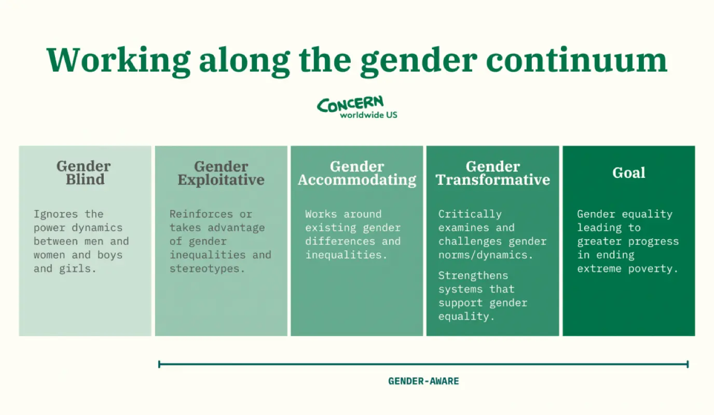

Imagine arriving at the emergency room with searing chest pain, breathless and panicked. Now imagine that, after a long wait, your symptoms are minimized or misinterpreted, only for you to later discover that you were experiencing a heart attack—yet you were discharged and barely looked at. For many women, this scenario is real life. This is an example of how medical gender bias can leave women underdiagnosed and mistreated, which can lead to severe illness if left untreated or even death.
This systematic bias in healthcare has historical roots, extending all the way back to even medieval times; the word “hysteria” is occasionally traced back to anywhere between the 17th and 19th centuries. It was primarily used to describe women who complained about their health, often dismissed and seen as crazy. The symptoms these women were experiencing were likely indicators of conditions and illnesses such as premenstrual syndrome, schizophrenia, anxiety, depression, postpartum depression, post-traumatic stress disorder, and more. This emerging habit of doctors to dismiss any complaints women had as overreactions hardly changed, even 200 years later, during the 1900s.
Despite making up 50% of the population, women are severely underrepresented in medical studies, which was an even bigger problem during the 20th century. Medical research mainly prioritized male subjects, and the FDA even created a restriction against women, disallowing those who are in their “reproductive years” from participating in drug trials during the 1970s. This was formally addressed over 20 years later in 1993 when the National Institutes of Health (NIH) mandated the inclusion of women in clinical trials. Even with such mandates, gender differences in symptoms and responses to treatment are often still underexplored. Today, men who suffer from chronic illnesses or pain are often seen as brave, but women are dismissed as hysterical and overemotional.
Women generally report higher levels and durations of pain, but are still given inadequate treatments in comparison to men. Some studies have even shown that women are more likely to be prescribed sedatives for pain rather than actual pain medication. In the emergency room in the US, women are shown to wait an average of 65 minutes to receive a diagnosis for abdominal pain, compared to men having to wait 49 minutes. But a study conducted in 2000 showed that women are seven times more likely than men to be misdiagnosed and left untreated when experiencing a heart attack. This disparity has undoubtedly caused some women to be left with severe damage, or even a loss of their life.
This lack of research has created a “gender data gap,” leading to diagnostic protocols and treatment approaches that are less effective or even detrimental for women. Illnesses are often looked at from a male physiological point of view, which means that physicians are often not assessing conditions in women correctly. Illnesses such as autoimmune diseases and chronic pain disorders, which disproportionately affect women, are also understudied. For instance, fibromyalgia, a chronic pain condition more common in women, often goes undiagnosed or is dismissed as psychological. Also, while the WHO estimates that there are approximately 10% of women around the world suffering from endometriosis, it takes over 7 years in the UK alone to be diagnosed.
For women of color, these biases intersect with racial discrimination, exacerbating the disparities in medical treatment. These biases stem from entrenched stereotypes that can influence healthcare providers' perceptions, resulting in fewer referrals for specialty care, fewer pain prescriptions, and often, less compassionate care.
Studies have shown that Black women are less likely to be prescribed pain medications than their white counterparts, even when presenting with the same symptoms and pain intensity. Research from the National Institutes of Health highlights that Black women’s concerns are frequently dismissed or minimized by healthcare providers, leading to worse health outcomes in areas like cardiovascular health, chronic illness, and maternal care. Some physicians have even been taught that black people experience less pain than white people, and have conducted terrible, unethical experiments on them, sometimes without their knowledge. For example, in 1932 the infamous Tuskegee experiment was conducted, where hundreds of Black men that were infected with syphilis were withheld treatment, and in the 1950s, Henrietta Lacks’ self-regenerating cells were taken and used without her knowledge.
Another issue is the lack of racial and cultural diversity among healthcare professionals, which can make patients feel misunderstood and reluctant to seek care. Language barriers, economic hurdles, and less access to high-quality healthcare facilities are just some of the few factors explaining why many women of color do not seek healthcare treatment. Even when controlling for income, women of color still are not treated the same as white women by physicians, leading to worse outcomes. The maternal mortality rate among Black women, for instance, is two to three times higher than for white women. Indigenous women are also twice more likely than white women to be obese and suffer from higher rates of obesity mortality.
To mitigate these disparities, several solutions can be pursued. First, healthcare education should include comprehensive bias training that addresses both racial and gender-based biases. This training can help providers recognize and counteract their own prejudices, allowing for more equitable treatment. Implementing standardized diagnostic protocols that consider gender and racial differences is essential to closing this data gap and ensuring all patients receive adequate care.
Additionally, increasing diversity within the healthcare workforce by encouraging more people of color and women to become healthcare providers can foster a more inclusive, empathetic healthcare environment. Finally, expanding research to include more women and people of color in clinical trials will help build a body of knowledge that reflects a wider variety of health experiences, ultimately improving diagnosis and treatment for all patients.
When all else fails, we should teach women of color how to self advocate for themselves – that is, taking matters into their own hands. This includes seeking opinions on your conditions from other doctors, bringing trusted friends or family to your appointments, questioning doctors on their decisions, and more. Our closest ally is ourselves.